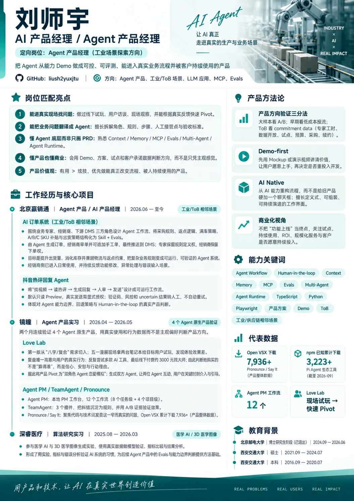

ALL-AUDIT · CURRENT DEPLOYED CANDIDATE
Black Lake 产品经理简历
代码版 HTML/CSS + SVG，使用旧 Black Lake 视觉设计作为 reference。此页汇总真实运行截图、像素回归、Intent Audit、AI Mock Audit、Developer Audit、Runtime Surface Completeness 与证据可溯源性。
19/20Intent Audit · ALIGNED
19/20AI Mock Audit · REAL
0.26173Desktop normalized RMSE · gate ≤ 0.35
9A4 PDF clickable URL annotations
Snapshots / Visual Proof
Reference · 旧 Black Lake 视觉

Current · Live Desktop
Current · Live Mobile 390px
Captured evidence
GitHub Actions run 35503099653 captured a real desktop screenshot, real 390px mobile screenshot, pixel diff, A4 PDF and verification JSON. Artifact: 10603580304.
Mobile gate: width 390 = viewport 390; content display = block; mission font = 16px; no horizontal overflow.
PDF gate: one A4 page, 595.92 × 841.92 pt, 9 clickable URL annotations.
Mobile gate: width 390 = viewport 390; content display = block; mission font = 16px; no horizontal overflow.
PDF gate: one A4 page, 595.92 × 841.92 pt, 9 clickable URL annotations.
Intent Audit 19/20
| 维度 | 分 | 证据 |
|---|---|---|
| Black Lake 定向 | 2 | 独立 07 变体 + 专属岗位定位 |
| 沿用旧视觉骨架 | 2 | 双栏、工业 Hero、青绿、底部口号均保留 |
| 代码化 | 2 | HTML/CSS 为 Source of Truth |
| SVG-first 资产 | 2 | Hero 与方法论 icon 均为 SVG |
| 数字支撑 | 2 | 6 周 / 2 大区 / 12 workflows / 8,028+ / 3,410+ |
| 产品设计思路 | 2 | Demo-first / AI Native / commitment data / HITL |
| 可证明与边界 | 2 | 事实边界 + E1–E5；MICCAI 已连 primary source |
| 真实截图验证 | 2 | Desktop + Mobile 均由真实 Chromium 捕获 |
| 跨表面完整性 | 2 | Page / Gallery / Mobile / PDF / PR |
| 像素级视觉一致 | 1 | 结构一致，但 Hero 照片→SVG 与字体/密度仍有明显 diff |
AI Mock Audit 19/20
| 维度 | 分 | 判断 |
|---|---|---|
| Data | 2 | 当前 SSOT 数据；无占位假指标 |
| Logic | 2 | 页面/验证逻辑真实执行 |
| Persistence | 2 | 本 surface 不宣称持久化功能 |
| API / Tool | 2 | 9 个真实外链；无假 API |
| UI | 2 | 真实托管 HTML/CSS/SVG |
| Agent | 2 | 描述项目，不伪装成正在运行的 Agent |
| Provenance | 1 | 企业交付 E1 仍主要来自本人履历材料，缺合同/签收/财务原件 |
| Browser Eval | 2 | 真实 GitHub Pages + Chromium |
| DB / State | 2 | 该静态简历不宣称 DB/state 产品能力 |
| Evidence | 2 | snapshot + diff + PDF + JSON artifact |
Developer Audit
PASS · 0 个阻塞性开发者信息泄露
- 页面未展示 prompt、内部 tool state、runner ID、调试日志、内部文件路径或 PR 状态。
- “事实边界 / 数据来源 / E1–E5”是用户明确要求的可溯源信息，因此保留合理。
- CI / RMSE / artifact ID 只出现在此 Audit 页面，不进入招聘简历主体。
Runtime Surface Completeness
| GitHub Pages Desktop | PASS |
| 390px Mobile | PASS · reflow / no overflow |
| Resume Gallery #07 | PASS |
| A4 PDF | PASS · one page |
| PDF links | PASS · 9 annotations |
| Source ↔ public mirror | PASS · latest content synchronized |
| Private PR runner | INFRA BLOCKED · runner_id=0; no steps executed |
Evidence / Traceability Audit
| Evidence | Status | Boundary |
|---|---|---|
| E1 · 6 周上线 / 大会演示 / 验收回款 / 2 大区 | PARTIAL PRIMARY | 来自本人履历材料；SSOT 明确标 user_asserted，未取得合同/签收/财务原件。 |
| E2 · Agent PM 12 workflows | LINKED | 项目 repo 可点击。 |
| E3 · Open VSX 8,028+ | LINKED | Open VSX 产品页可点击；日期口径 2026-09-19。 |
| E4 · npm 9 包 / 3,410+ | AGGREGATE | 数值有明确口径，但简历页没有一个可直接证明总和的单一官方聚合链接。 |
| E5 · MICCAI 2024 / ADNI 795 / 78.74→85.83 | PRIMARY LINK | 已直接链接 MICCAI Open Access primary page。 |
Visual Parity Audit
自动回归 gate 通过： normalized RMSE 0.26173 ≤ 0.35。
但不能称为 pixel-perfect： 最大差异来自 Reference 的真实工业流水线照片，而当前按约束使用 SVG 机器人/流水线；其次是中文字体、段落密度与少量间距差异。结构、色系、信息层级和主要区域位置已经对齐。
当前真正的 Human Decision Boundary：如果继续坚持 SVG-only，就把 0.26 级别当作“结构与视觉语言匹配”；如果目标是进一步逼近原参考图的像素表现，需要允许下一阶段使用 ImageMagick / approved reference crop 等非生成式视觉资产处理。当前没有擅自切换。